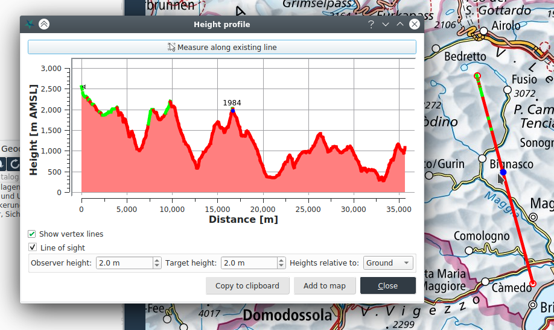

Messen und Geländeanalyse
In der Registerkarte Analyse befinden sich die Werkzeuge zum Messen von Distanzen, Flächen, Kreise und Winkeln sowie verschiedene Geländeanalysefunktionen.
Beim Zeichnen von sämtlichen Messgeometrien können die Koordinatenpunkte numerisch eingegeben werden, wenn unter der Registerkarte Einstellungen die Schaltfläche Numerische Eingabefelder während des Zeichnens anzeigen aktiv ist.
Messfunktionen
Die Messfunktionen arbeiten auf einem WGS84 Ellipsoid. Beim Messen werden direkt neben der Messgeometrie relevante Messwerte angezeigt. Für Distanz, Flächen und Kreise können mehrere Messgeometrien nacheinander gezeichnet werden. Das Messtotal wird im unteren Bereich des Kartenfensters angezeigt. Dort kann auch die Messeinheit geändert werden kann. Ferner kann mittels dem Picker-Button eine existierende Geometrie gemessen werden.

Geländeanalysefunktionen
Um die Geländeanalysefunktionen verwenden zu können, muss im aktuellen Projekt ein Höhenmodell definiert sein. Eine Raster-Ebene kann in dessen Kontextmenü im Karteninhaltsverzeichnis als Höhenmodell ausgewählt werden.
Das Profil / Sicht Werkzeug erlaubt das Messen von Höhenprofile. Falls die Messlinie aus einem einzelnen Segment besteht, kann entlang dieser eine Sichtbarkeitsanalyse (Line of Sight) durchgeführt werden. Sichtbare bzw. unsichtbare Bereiche werden dann entsprechend Grün oder Rot gezeichnet. Fährt man mit der Maus in der Karte entlang der Messlinie, wird die entsprechende Position in der Graphik mit einem blauen Punkt angezeigt. Die Sichtbarkeitsanalyse berücksichtigt die Erdkrümmung.

Die Neigungs- und Schummerung-Werkzeug berechnen Neigungsprofil bzw. die Schattierung des Gelände in einem ausgewählten rechteckigen Ausschnitt.
Das Einsehbarkeitswerkzeug berechnet den sichtbaren bzw. unsichtbaren Geländebereich in einem Kreissektor, ausgehend vom Kreismittelpunkt – dem Beobachterstandort. Die Einsehbarkeitsanalyse berücksichtigt die Erdkrümmung.
Die Ergebnisse der Neigungs-, Schummerungs- und Einsehbarkeitsanalysen werden als Raster-Ebenen der Karte hinzugefügt, und erscheinen dementsprechend im Karteninhaltsverzeichnis. Beim Speichern des Projektes werden diese Datensätze im Ordner <Projektname>_files abgelegt.